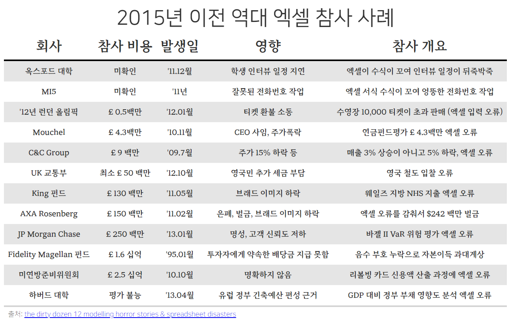
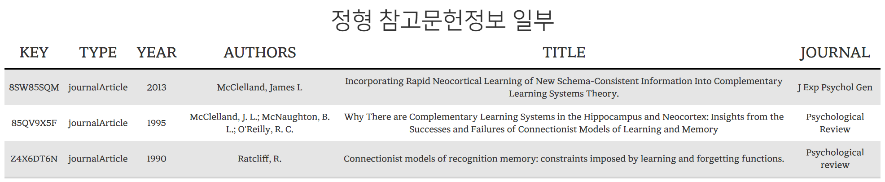

# 전체 행의 수
total_rows <- 2937
# 전체 작업의 99%가 정확해야 함
desired_accuracy <- 0.99
# 행당 오류율을 찾기
# 정확도 = (1 - 오류율) ^ 전체 행의 수
# 따라서 오류율 = 1 - (정확도의 1/전체 행의 수제곱)
row_error_rate <- 1 - (desired_accuracy ^ (1/total_rows))
scales::percent(row_error_rate, accuracy = 0.000001)
#> [1] "0.000342%"12 엑셀의 역설
스프레드시트는 행과 열로 구성된 데이터 시트로, 데이터를 정리하고 계산작업에 적합한 컴퓨터 응용프로그램이다. 마이크로소프트 엑셀은 가장 잘 알려진 스프레드시트 프로그램 중 하나로, 다양한 기능과 도구를 제공하여 데이터 분석, 그래프 작성, 자동화 등을 수행하여 사무자동화의 핵심 소프트웨어로 자리잡고 있다. 스프레드시트 프로그램은 시간이 지남에 따라 다양한 형태로 진화했다.
비지칼크(VisiCalc): 1979년 출시된 VisiCalc은 최초의 상업적으로 성공한 스프레드시트 프로그램으로 개인 컴퓨터 사용에 혁명을 일으켰고, 스프레드시트 기본 개념을 대중에게 소개했다.
로터스(Lotus) 1-2-3: 1983년 출시된 Lotus 1-2-3은 VisiCalc을 대체하며 스프레드시트 시장을 장악했다. 그래픽 인터페이스와 향상된 기능을 제공하며 많은 사용자들에게 사랑받았다.
엑셀: 1985년에 매킨토시용으로 처음 출시된 후, 1987년 윈도우즈용 버전이 나왔다. Excel은 사용자 친화적 인터페이스와 다양한 기능으로 인기를 얻었다. 지속적인 업데이트와 혁신으로 오늘날 가장 널리 사용되는 스프레드시트 프로그램이 되었다.
구글 시트(Google Sheets): 구글 시트는 클라우드 기반 스프레드시트 프로그램으로, 여러 사용자의 실시간 협업을 가능하게 한다. 2006년에 처음 출시된 이후, 접근성과 공유 기능으로 인기를 끌었다.
캘크(Calc): 오픈 소스 스프레드시트 프로그램들은 각각 Apache OpenOffice와 LibreOffice 스위트의 일부로 엑셀과 유사한 기능을 제공하며, 무료로 사용할 수 있는 대안으로 많이 사용된다.
12.1 엔론사 엑셀 파일
회계부정으로 파산한 엔론(Enron)은 많은 유산(Hermans 와/과 Murphy-Hill 2015)을 남겼다. 유산중에 대기업에서 스프레드쉬트 엑셀을 어떻게 사용했는지에 대한 다양한 사례를 파악할 수 있다. 엑셀 코퍼스 분석 결과에 따르면, 엔론 스프레드시트 중 24%에서 엑셀 오류가 발견되었다.

(fig_excel_fn_gt?) 에 사용된 함수들 중 핵심적인 15개의 함수가 전체 스프레드시트의 76%를 차지했고, 매일 100개의 스프레드시트가 이메일에 첨부되어 유통되었으며, 전체 전자주편 중 10%에서 스프레드시트가 첨부되거나 주제로 전달되었다.
12.2 엑셀 참사
자율주행차, 로봇 등의 제어에는 C/C++ 언어가 많이 사용되고 있다. C/C++ 언어는 메모리를 직접 관리하는 저수준 언어로, 메모리 관리에 대한 이해도 많이 필요한데 제대로 작성되지 않은 코드는 운전자의 목숨을 위협할 수 있다. 마찬가지로 엑셀은 작은 데이터 분석과 계산에 최적화되어 있지만, 데이터베이스로 사용하는 것에는 제약이 있다. 많은 기업과 조직이 중요한 데이터를 엑셀 스프레드시트에 보관하고 작업하는데, 이는 사소한 실수로 중요한 의사결정이 왜곡될 위험이 있다.
엑셀을 사용하는 주된 이유는 엑셀 사용 습관으로 데이터를 엑셀로 저장하고 분석하는 습관이 있으며, 데이터 내보내기가 쉽기 때문이다. 또한, 데이터가 작아서 데이터베이스가 필요 없다고 생각하지만, 사업이 커지고 업무량이 늘면서 엑셀의 작업량과 복잡성이 증가한다.
엑셀 스프레드시트의 단점으로 다음이 많이 언급된다.
- 한 번에 한 사람만 작업 가능: 다른 사람이 작업 중이면 읽기 전용으로만 접근 가능.
- 데이터 감사의 부재: 한 사람이 주로 관리하므로, 그 사람이 떠나면 지식과 정보가 손실될 수 있다.
- 정형화된 작업흐름 부족: 엑셀로 정의된 업무 프로세스는 수작업으로 취합과 정리가 필요하다.
- 모형 지원 부족: 엑셀은 크기가 커지면 오류에 취약해진다.
- 보고서 생성의 어려움: 데이터베이스에서는 쿼리를 통해 보고서를 더 쉽게 생성할 수 있다.
- 보안과 규제의 어려움: 스프레드시트는 보안과 규제를 가하기 어렵다.
여러 기업이 엑셀 사용을 중요한 업무에서 단순히 피하는 것을 넘어 전면 중단시킨 사례가 존재한다. 그림 12.1 에 2015년 전후까지 기록된 대표적인 스프레드시트 참사를 기록한 사례들인데, 최근 들어 이런 사례들은 크게 줄었지만 코로나 전후를 틈타 다시 엑셀 참사 사례가 다양하게 언론에 보도되고 있다.

반면, 데이터베이스는 사용자 활동 기록, 정형화된 작업흐름 지원, 오류 감소, 효율적인 보고서 생성 및 강력한 보안과 규제 기능을 제공한다. 따라서 엑셀 스프레드시트 대신 데이터베이스를 사용하는 것이 여러 면에서 이점을 제공한다.
도널드 럼스펠트와 제니 브라이언
“전쟁은 현재 가용한 군대와 함께 가야지, 나중에 원하거나 바라는 군대와 함께 가는 것은 아니다” – 도널드 럼스펠트
“데이터 분석은 알고 있는 도구와 함께 시작하지, 필요한 도구와 함께 시작하는 것이 아니다” – 제니 브라이언
12.3 스프레드쉬트 복잡성
데이터 분석을 위해, 사람과 컴퓨터 모두 읽을 수 있는 프로그램들이 많이 존재한다. 컴퓨터 프로그램을 열어보면, 컴퓨터가 실행하는 코드와 함께, 컴퓨터에서는 무시되지만 사람에게 매우 중요한 주석이 포함되어 있다. 따라서 컴퓨터와 사람 모두가 읽을 수 있는 코드는 데이터 과학에 필수적이다.
코드는 사람과 컴퓨터 모두에게 가독성을 제공해야 한다. 그러나 데이터 역시 사람과 컴퓨터 모두에게 가독성을 제공해야 한다는 것이 문제다. 특히 스프레드시트는 사람과 컴퓨터 양쪽 모두에게 가독성을 제공하지 않는 경우가 많다. 스프레드시트는 처음에는 쉽게 접근할 수 있지만, 1주일 지난 후 해독하기 어려운 복잡성을 종종 경험하게 된다.

“ALGORITHMS BY COMPLEXITY”(그림 12.2) 제목 아래에 다양한 알고리즘과 시스템이 복잡도에 따라 나열되어 있으며, 왼쪽에서 오른쪽으로 갈수록 복잡도가 증가한다. 가장 왼쪽에는 “LEFTPAD”와 “QUICKSORT”가 있고, 그 오른쪽에는 “GIT MERGE”가 있다. 그 다음에는 “SELF-DRIVING CAR”과 “GOOGLE SEARCH BACKEND”가 위치하고 있으며 오른쪽 끝에 “SPRAWLING EXCEL SPREADSHEET BUILT UP OVER 20 YEARS BY A CHURCH GROUP IN NEBRASKA TO COORDINATE THEIR SCHEDULING”이라는 문구가 있고, 20년 동안 네브래스카의 한 교회 그룹이 그들의 스케줄링을 조정하기 위해 만들어온 방대한 엑셀 스프레드시트 복잡성을 강조하고 있다.
스프레드쉬트는 데이터, 서식, 수식으로 구성된다. 숫자 데이터를 엑셀로 가져오게 되면 엑셀 내장 함수를 통해 수식 계산을 수행하고, 엑셀 사용자 본인 혹은 외부 사람을 위해 서식을 입히는 과정을 거쳐 비로소 완성된 스프레드쉬트가 된다.
스프레드쉬트과 R/파이썬이 비교된 그림 12.4 를 보면, 기능이 일대일로 대응되는 것을 확인할 수 있다.

12.4 실무 사례
데이터 복잡성이 일반적으로 처리할 수 있는 것을 넘어서면 “추출(Extract), 변환(Transform), 로드(Load)”라고 하는 과정을 수행해야 한다. 예를 들어 서지학 데이터에서 다음과 같은 질문에 답을 하고자 한다고 가정해 보자. (The Carpentries 2021)
- 각 사람이 기여한 논문의 수는 얼마인가?
- 누가 누구와 협업하는가?
불행히도, “다중 값 필드(multi-valued field)”가 있는 필드 때문에 바로 스프레드시트/CSV 형식 서지학 데이터를 데이터베이스에 넣을 수 없다. 이러한 상황에서는 데이터를 먼저 적절한 형식으로 변환하는 작업이 필요하다.
저자 한명에만 관심이 있다면, 첫번째 질문에 답하기 위해 스프레드시트에서 저자명을 검색한 다음, 그 행을 선택하고 수동으로 그녀의 공동 저자를 집계하여 두 번째 질문에 답할 수 있다. 그러나 모든 저자에 대해서 동일한 작업을 한땀한땀 수행하는 데는 며칠이 걸릴 것이며, 거의 확실하게 실수(휴먼 에러)가 있을 것이며, 그러면 누군가가 또 다른 더 큰 스프레드시트를 건네주고 처음부터 다시 시작해야 할 것이다. 하지만, 모든 저자에 대해 하나씩 이런 작업을 수행하는 것은 몇일이 소요된다. 거의 확실히 실수도 할 것이다.
두가지 질문에 답하기 위해 많은 작업처럼 보일 수 있지만, 수십줄 이상되는 데이터에 대해서는 많은 시간을 절약할 수 있다.
- 데이터가 데이터베이스에 존재한다면 다른 질문들도 묻고 답하기 쉬워진다.
- 향후 또다른 형태 스프레드시트에 개발한 도구를 재사용할 수 있다.
- 지금까지 수행한 일에 대한 기록을 가질 수 있다(스프레드시트에서 클릭하는 것으로는 얻을 수 없는 것).
- 정확할 가능성이 훨씬 더 높고 빠르다.
이 접근 방식을 통해 데이터를 보다 체계적이고 효율적으로 관리할 수 있으며, 데이터 분석을 위한 기반을 마련할 수 있다. 데이터베이스에 데이터를 저장함으로써, 데이터의 일관성을 유지하고, 복잡한 쿼리를 쉽게 실행할 수 있으며, 나중에 데이터를 검토하거나 업데이트할 때 시간과 노력을 절약할 수 있다. 전체적인 작업흐름은 다음과 같다.
- 모든 논문에 모든 기여자에 대한 (키값, 저자명) 짝을 출력하는 작은 파이썬 프로그램을 작성한다. 예를 들어, 작성한 프로그램이 스프레드쉬트 첫 세줄을 다음과 같이 변환한다:
8SW85SQM McClelland, James L
85QV9X5F McClelland, J. L.
85QV9X5F McNaughton, B. L.
85QV9X5F O'Reilly, R. C.
Z4X6DT6N Ratcliff, R.프로그램을 변경해서 데이터베이스에 키값과 저자를 삽입하는 SQL
insert문장을 생성한다.SQL 쿼리를 사용해서 최초 질문에 답한다.
바흐라이(Bahlai) 법칙
“다른 사람의 데이터는 항상 일관성이 없고 잘못된 형식으로 되어 있다. (”Other people’s data is always inconsistent and in the wrong format.”)
다음 간단한 예제를 통해서 데이터(스프레드쉬트에 내장된 참고문헌정보)를 어떻게 받아서 유용한 것으로 변경할지 살펴보자. 출발점은 다음과 같은 2,937행을 갖는 bibliography.csv 라는 스프레드쉬트(엑셀) 파일이다.

본격적인 개발에 들어가기 전에 프로그램을 개발하는 것이 시간을 얼마나 절약할 수 있고 정확도를 높이는지 살펴보자.
12.4.1 확률이 얼마나 될까?
스프레드쉬트는 2,937행을 담고 있다. 전체 분석작업의 99%를 틀리지 않게 하는데, 손으로하는 전사작업은 얼마나 정확성이 있을까? 즉, 행당 오류율이 얼마나 되어야 전체 작업을 올바르게 완수하는데 0.99 확률이 될까?
"0.000342%"12.4.2 손익분기점
수작업으로 5분만 소요되는 작업을 (전산화해서) 10분 걸려 프로그램 작성한다면, 해당 작업을 두번 이상 수행한다면, 프로그램으로 작성할 가치가 있다. 유사하게, 특정한 저자와 공저자가 누구인지만 알아내려고 하고, 다른 질문은 전혀 없을 것이거나, 반복작업을 할 필요가 없다면, 수작업으로 스프레드쉬트를 검색하는 것이 데이터를 데이터베이스로 옮기는 프로그램을 작성하는 것보다 아마도 더 빠를 것이다.
현재 수작업으로 하고 있는 작업을 선택하라. 매번 얼마의 시간이 소요되고, 얼마나 자주 수행하는지 추정하고, 대신에 작업을 프로그램으로 만드는데 얼마나 소요되는지 추정하라. 프로그래밍이 실질적으로 얼마나 시간을 절약해줄까? 얼마나 확신이 되나요?
이 문제를 해결하기 위해, 현재 수작업으로 진행 중인 작업을 선정하고, 그 작업에 대한 다음 정보들을 추정해야 한다.
- 작업에 소요되는 시간: 각 작업 수행에 걸리는 평균 시간을 추정한다.
- 작업의 빈도: 이 작업이 얼마나 자주 수행되는지 추정한다. 예를 들어, 일주일에 몇 번 또는 한 달에 몇번 등이 된다.
- 프로그램 작성에 소요되는 시간: 동일한 작업을 자동화하는 프로그램을 작성하는 데 필요한 시간을 추정한다.
상기 정보를 바탕으로 프로그래밍이 실질적으로 시간을 절약해주는지를 평가할 수 있다. 시간 절약의 계산은 다음과 같은 간단한 공식으로 이루어집니다:
총 절약시간 = (수작업 시간 * 작업 빈도 * 기간) - 프로그램 작성 시간
여기서, “기간”은 프로그램이 사용될 예상 기간이 된다.
예를 들어, 매주 2시간 걸리는 작업이 있고, 이를 자동화하는 프로그램을 작성하는 데 10시간이 걸린다고 가정해 보자. 프로그램이 1년 동안 사용될 것이라고 가정하면, 총 절약 시간은 다음과 같습니다:
총 절약시간 = (2시간/주 * 52주) - 10시간 = 94시간
프로그램 작성에 들인 시간을 고려하더라도 연간 94시간을 절약할 수 있음을 의미한다.
유념할 점은 이러한 추정은 작업의 복잡성, 작업 빈도 및 프로그래밍 능력에 따라 달라질 수 있으므로, 여러가지 요소들을 고려하여 신중하게 추정해야 한다.
데이터 모델링
관계형 데이터베이스의 진정한 힘은 다중 테이블과 테이블 사이의 관계를 생성할 때 생긴다. 응용프로그램 데이터를 쪼개서 다중 테이블과 두 테이블 간에 관계를 설정하는 것을 데이터 모델링(data modeling)이라고 한다. 테이블 정보와 테이블 관계를 표현하는 설계 문서를 데이터 모델(data model)이라고 한다.
데이터 모델링(data modeling)은 상대적으로 고급 기술이여서 이번 장에서는 관계형 데이터 모델링의 가장 기본적인 개념만을 소개한다..
문자열 데이터 중복은 데이터베이스 정규화(database normalization) 모범 사례(best practice)를 위반하게 만든다. 기본적으로 데이터베이스 정규화는 데이터베이스에 결코 한번 이상 동일한 문자열을 저장하지 않는다. 만약 한번 이상 데이터가 필요하다면, 그 특정 데이터에 대한 숫자 키(key)를 생성하고, 그 키를 사용하여 실제 데이터를 참조한다.
실무에서, 문자열이 컴퓨터 주기억장치나 디스크에 저장되는 정수형 자료보다 훨씬 많은 공간을 차지하고 더 많은 처리시간이 비교나 정렬에 소요된다. 항목이 단지 수백개라면, 저장소나 처리 시간이 그다지 문제되지 않는다. 하지만, 데이터베이스에 수백만명의 사람 정보와 1억건 이상의 링크가 있다면, 가능한 빨리 데이터를 스캔하는 것이 정말 중요하다.
연습문제
객관식
-
문제: 스프레드시트 기능 대신 SQL 쿼리를 사용하는 주요 이유는 무엇입니까?
- 더 빠른 데이터 입력
- 사용자 인터페이스 개선
- 더 복잡한 데이터 분석 및 조작
- 자동 데이터 백업
-
문제: 스프레드시트가 복잡해지면서 흔히 발생하는 문제는 무엇입니까?
- 데이터 간의 연결 유지 어려움
- 시각적 표현의 한계
- 대용량 데이터의 효율적 관리 어려움
- 기본 함수의 계산 오류
-
문제: SQL과 스프레드시트를 결합하여 데이터를 관리하는 경우, 어떤 종류의 작업을 가장 효과적으로 수행할 수 있습니까?
- 복잡한 문서 편집 및 내용 구성
- 자동화된 이메일 마케팅 캠페인 관리
- 대규모 데이터셋에 대한 고급 데이터 분석
- 전문적인 그래픽 디자인 작업
서술형
- 문제: 스프레드시트로 관리하기 어려운 대용량 데이터셋의 예를 들고, 이를 효과적으로 관리하기 위한 해결방법을 제시하시오.
- 문제: 스프레드시트 데이터와 SQL을 결합할 때 발생할 수 있는 잠재적 문제점과 해결 방안에 대해 설명하시오.